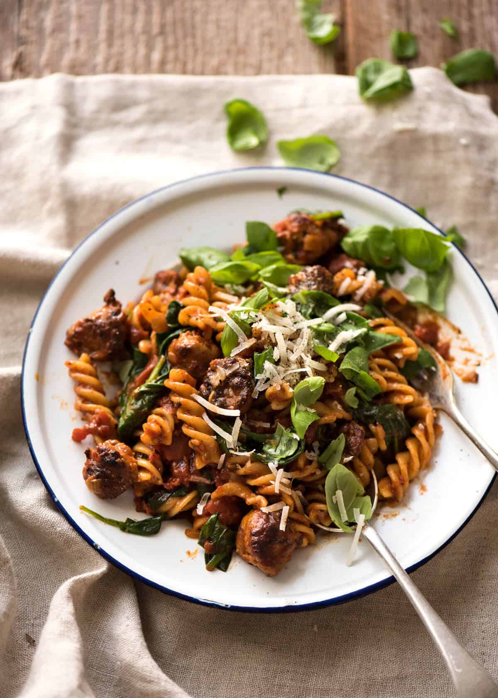

Pasta Di Mama

Ingredients
- 250 g / 0.5 lb spiral pasta
- 500 g / 1 lb good Italian sausages
- 1 tbsp olive oil
- 1 tsp chilli flakes / red pepper flakes
- 800 g / 28 oz crushed tomato
- Salt and pepper
Preparations
- Boil a large pot of water with 2 tsp salt, add pasta.
- Use a sharp knife to cut sausages into chunks about 1.5cm/3/5". It will get a bit smeary and the chunks will
be weird shapes - don't worry, it self fixes while cooking!
- Add baby spinach (if using), pasta, and about 1/2 cup pasta cooking water. Toss quickly, no longer than 1
minute (otherwise the pasta may start to break).